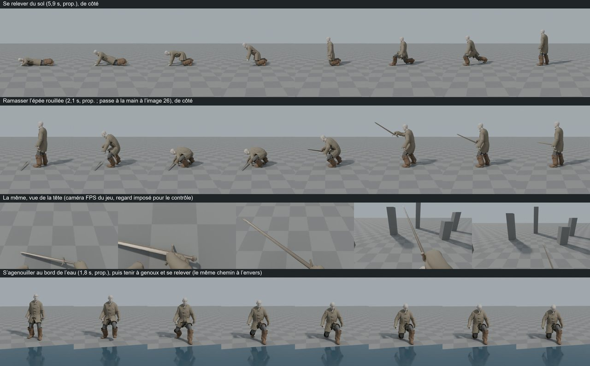

Le héros : se relever, ramasser l'épée, s'agenouiller au bord de l'eau (Blender, avant Unreal)
ValidéT-0330 · P1-09 · P1-22

Sur le PC : E:\aaa-proto\essai\heros-reveil\
Le directeur rend le PC en continu, carte graphique et processeur (D-323) : les deux files repartent après 12 jours sans travail sur le jeu. Priorité : finir les effets de la démo 1 et remettre à jour les dates du plan.
Mise à jour : 30/10/2026 à 20:51
Les deux files de travail (D-317), en continu (D-323).
Carte libre depuis 18:43 ; un seul agent à la fois dans le projet Unreal, hors écran (D-284, D-289).
Premiers effets Niagara du prototype, et pieds du héros tenus pendant le sort sans déformer les bras.
En vérificationCorrection 1 livrée vers 19:47 (commit 372b795) : plus aucune image déformée sur le film, parcours VERT poste libre (150 et 146 images/s), règles sans échec (191 lignes). Vérification lancée à 19:48 (carte). Le Chef a demandé au vérificateur de juger aussi le rendu : le sang en boules rondes, les veines qui ressemblent à des cheveux, une ligne orange pendant la canalisation.
Fumée noire, cendres, dissolution en une demi-seconde, trois paires d'yeux dorés ; sons et voix de l'entité ; vidéo de la scène.
À fairePart après T-0320.
Les répliques du parcours branchées sur leurs moments, avec la vraie voix et le sous-titre calé.
À fairePart après T-0321.
Jauges, verrouillage, visée à la première personne et aides à l'écran au style des maquettes ; le HUD provisoire s'en va.
À faireÉcrit à 19:03 ; part après T-0328.
Niveaux et expérience ; à la fin de la horde, le héros passe au niveau 2 : barre, signal, réplique de l'entité.
À faireÉcrit à 19:03 ; part après T-0331.
Après T-0320 : T-0321 (apparition de l'Ange, avec son et voix), T-0328 (voix de l'entité dans le jeu), puis P1-18 (affichage), P2-31 (montée de niveau), P1-21 (sons).
Sans la carte graphique.
Les dates des démos 1 et 2 et de la version finale, refaites par le script du plan à partir d'aujourd'hui.
ValidéValidé à 19:55 : démo 1 vers le 13/11/2026 (06/11 à 28/11), démo 2 vers le 03/01/2027 (29/11 à 07/03), version finale vers le 19/02/2027 (23/12 à 09/06) ; 802 h restent. Liste complète des changements de la présentation prête.
Faites par le code dans Blender : se relever du sol, ramasser l'épée, s'agenouiller au bord de l'eau, tenir, se relever.
ValidéValidé à 20:50 : mouvement humain, seuils tenus, caméra lisible ; note d'import corrigée. Reste à les faire jouer dans Unreal (P1-09, P1-22). Deux questions gardées pour le directeur (moment où le contrôle revient, épée pendant le reflet).
Les dates et les heures montrées aux investisseurs reportées (89 valeurs), la frise refaite pour rester lisible, les états des démos alignés. Page prête, publiée après validation.
En vérificationCorrection 1 livrée vers 20:45 : contrôle honnête (84 fautes attrapées sur 86), risque chiffré retiré de la page publiée tant que le directeur n'a pas répondu (D-323 (4)). Vérification en cours. La page du plan refaite n'est pas publiée, pour la même raison (D-323 (5)).
L'inventaire de ce que le Hameau de la Brume doit montrer, une fiche et une invite d'image par modèle : la première part de la génération 3D du hameau (démo 2).
À corrigerLivré vers 20:35 : 30 fiches, 34 invites, environ 42 images et 34 modèles 3D à générer. Vérificateur (7 points) et gardien du lore (11 points, dont 3 invites à reprendre avant toute génération) : correction 1 lancée à 20:46. Questions du hameau gardées pour le questionnaire.
Animation à droite et à gauche, dans la suite des 7 de l'escalade : le héros longe la paroi jusqu'à un point de sortie.
En coursLancé à 20:52 (Blender, processeur).
Après le recalcul : la présentation aux investisseurs remise à jour, puis d'autres tickets sans carte.
Les images, modèles 3D et animations du jour (sans vidéo copiée dans la page).
T-0330 · P1-09 · P1-22

Sur le PC : E:\aaa-proto\essai\heros-reveil\
Le directeur rend le PC en continu, carte graphique et processeur (D-323).
Reprise de la correction de T-0320 sur la carte. Semaines du 20/10 (vide) et du 27/10 créées sur le site ; GitHub met ses publications en file d'attente, ce qui retarde la mise en ligne.
T-0329 lancé (recalcul du plan au 30/10, processeur).
T-0330 lancé (animations du réveil, de l'épée et du reflet, Blender, processeur).
T-0331 (affichage du didacticiel) et T-0332 (première montée de niveau) écrits pour la file carte. Bilan de la nuit du 17 au 18/10 et note de reprise mis à jour. Quota : 6,5 % (compteur non recalé depuis le 09/10).
T-0329 livré (plan recalculé au 30/10) ; vérification lancée. Le site est de nouveau en ligne à jour (GitHub a rattrapé sa file). Quota : 6,9 %.
T-0329 : trois retouches de texte demandées, aucun chiffre ne change ; correction lancée.
T-0320 livré, vérification lancée. Le Chef a regardé la planche : points de rendu transmis au vérificateur. Le nom du compte Windows, resté dans 5 scripts du prototype (dépôt local, rien de parti), sera retiré avec T-0321. Quota : 7,7 %.
T-0329 validé (plan recalculé au 30/10).
T-0333 lancé (présentation aux investisseurs : dates et heures). Quota : 7,9 %.
T-0333 livré (dates de la présentation) ; vérification lancée. Quota : 8,5 %.
T-0330 livré (animations du réveil, de l'épée et du reflet) ; vérification lancée. Quota : 8,6 %.
T-0334 lancé (fiches du hameau, première part de la génération 3D de la démo 2).
Choix provisoire D-323 (4) : le risque chiffré des dates reste hors de la page publiée tant que le directeur n'a pas répondu.
T-0334 : relectures reçues, correction 1 lancée. Choix provisoire D-323 (5) : la page du plan refaite attend la réponse du directeur. Quota : 9,8 %.
T-0330 validé (animations du réveil, de l'épée et du reflet).
T-0335 lancé (déplacement de côté sur la paroi, Blender). Quota : 10,1 %.
Questions en attente du directeur (un seul questionnaire groupé quand tout sera validé, D-295).
5 questions attendent leur réponse. Personne ne les tranche à la place du directeur.
Restes du point 9 de la présentation, que le Chef ne tranche pas (ils engagent l'équipe et votre présentation) : animateurs freelances, nombre de PNJ qui parlent, images, l'équipe.
Pas une question, une demande quand vous voulez : télécharger les animations de la liste (au moins les priorités 1 et 2, ≈ 15 à 20 min) dans E:/aaa-proto/assets/mixamo/, avec les réglages notés. Le Chef lance le reciblage dès qu'elles sont là.
À écouter au casque : E:/aaa-proto/livrables/demo-1/prologue/prologue-en.mp4. Le fond est très baissé sous trois répliques : garder ou remonter ? Et le publier ou non sur le site (la voix de l'entité imite un lecteur réel de LibriVox, ce genre de voix n'a pas été publié jusqu'ici) : (a) le montrer seulement aux investisseurs ; (b) le publier avec la mention « voix générée » ; (c) publier une version sans voix.
La présentation montre le débit probable avec ses fourchettes (démo 1 vers le 13/11/2026). Risque chiffré aux notes de l'orateur : si le processeur prend toujours un tiers du quota hors plan, S7,4, S18,1 et S28,2. Garder le probable, montrer le prudent, ou les deux ? Et la voix du nom (P2-18, ≈ 45 h), à reporter au plan ou non ?
D-321 (3) dit de la montrer, mais elle n'est écrite nulle part dans la page, parce qu'elle porte le nom du compte GitHub : l'écrire telle quelle, ou la donner à part ?
E:/aaa-proto/essai/gibier/laie : la laie (modèle, animations, vidéo) · E:/aaa-proto/essai/villageois/villageois-taches.mp4 : les tâches des villageois · E:/aaa-proto/assets/sons/prologue/ecoute.html : la musique et les sons du prologue · D:/aaa-game/.equipe/prototype/etat-demo-1.md : l'état de la démo 1 et les prochains tickets · D:/aaa-game/.equipe/prototype/plan-sonore-demo-1.md : le plan sonore de la démo 1 · https://chipat-neko.github.io/aaa-game-pages/pages/simulation-hameau/page.html : la simulation du hameau à jour · D:/aaa-game/.equipe/prototype/etat-demo-2.md : l'état de la démo 2 et l'ordre proposé · https://chipat-neko.github.io/aaa-game-pages/pages/presentation/page.html : la présentation pour les investisseurs (à jour au 17/10) · https://chipat-neko.github.io/aaa-game-pages/pages/plan/page.html : le plan de production recalculé · E:/aaa-proto/assets/sons/demo1/ecoute.html : les sons ajoutés à la démo 1 · E:/aaa-proto/voix/prototype/j1/ecoute.html : les 37 voix de l'entité (démo 1) · E:/aaa-proto/livrables/demo-1/video-courte/demo1-video-courte.mp4 : la vidéo courte de la démo 1 (pleine résolution)